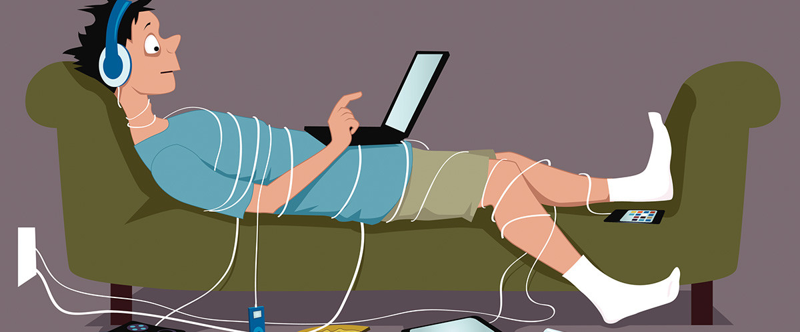

Dependencia Tecnologica
¿Qué es la dependencia tecnológica?
La dependencia tecnológica se refiere a la creciente necesidad y utilización de tecnologías en diversos
ámbitos de la sociedad. En la actualidad, la sociedad depende cada vez más de la tecnología en áreas como la
comunicación, la educación, la salud, la industria, el comercio y el entretenimiento, entre otros.
Ventajas de la dependencia tecnológica
- Mayor eficiencia: Las tecnologías permiten realizar tareas de manera más rápida y eficiente, lo que
aumenta la productividad y facilita la vida cotidiana.
- Comunicación instantánea: La tecnología ha mejorado la comunicación, permitiendo que las personas se
conecten de manera instantánea a través de teléfonos inteligentes, redes sociales y aplicaciones de
mensajería.
- Acceso a información y conocimiento: Internet y otras herramientas tecnológicas ofrecen un acceso sin
precedentes a una amplia gama de información y conocimiento, lo que facilita el aprendizaje y la
investigación.
Desventajas de la dependencia tecnológica
- Vulnerabilidad a fallos técnicos: Si los sistemas tecnológicos fallan, puede haber interrupciones en los
servicios y dificultades para llevar a cabo ciertas tareas.
- Riesgos de seguridad: La dependencia de la tecnología también puede generar riesgos de seguridad, como
la exposición a virus informáticos, el robo de datos personales y la ciberdelincuencia.
- Brecha digital: La dependencia tecnológica puede ampliar la brecha entre aquellos que tienen acceso y
conocimiento tecnológico y aquellos que no, lo que puede exacerbar las desigualdades sociales y
económicas.
Es importante reconocer y equilibrar la dependencia tecnológica, aprovechando sus beneficios mientras se
toman medidas para minimizar los riesgos asociados. Esto implica promover la alfabetización digital,
fomentar la seguridad en línea y diversificar las habilidades y conocimientos para no depender
exclusivamente de la tecnología en todas las áreas de la vida.